Midi设置
导入Midi文件后，你可以在Midi设置中设置Midi的各种属性。
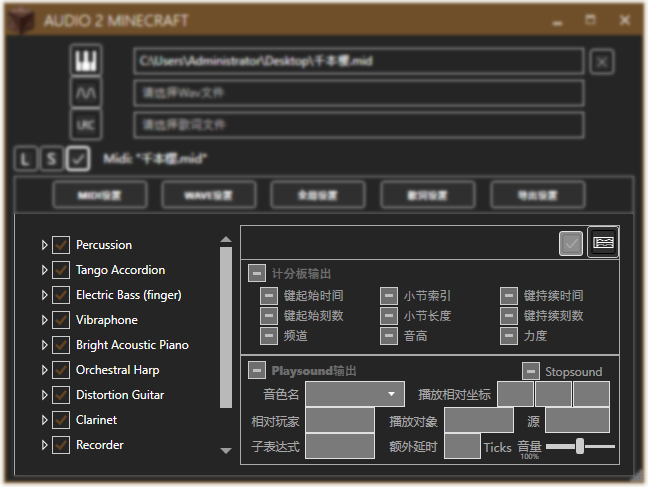
左侧列表为音轨(Tracks)列表，右侧则是属性设置栏。
列表
列表切换
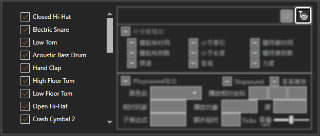
点击“音轨序列”图标变为“圆号”图标，音轨列表将会切换为乐器(Instruments)列表。再次点击该按钮切换回音轨列表。
音轨列表和乐器列表是两个相互关联的列表，一条音轨中可以包含多个乐器，一个乐器也可以对应多个音轨。但你不用担心在设置音轨属性后切换为乐器列表，原本设定的属性会消失，因为A2M是将各个音轨的各个乐器视为独立对象处理的。
启用与禁用
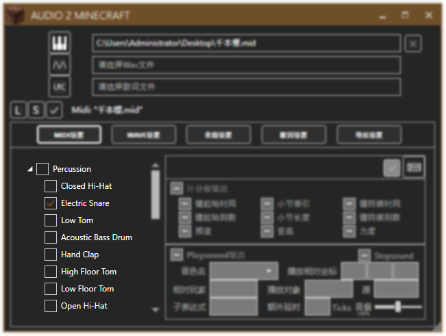
音轨列表中点击方框或名称将禁用一条音轨。乐器列表中则是禁用一类乐器。再次点击则启用。
图中我们禁用"Percussion"音轨，启用乐器"Electric Snare"，在实际导出时，乐器"Electric Snare"仍是启用的。音轨被禁用并不影响音轨中乐器的启用。
折叠与选中
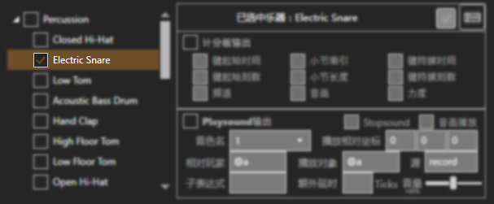
点击左方小三角展开或折叠。点击方框或名称外的部分选中。元素未被禁用时，属性才允许被修改。
属性
选中一个被启用的元素后，你才能修改它的属性。
修改的属性将会影响该元素所代表的音轨或乐器下的所有键。
计分板输出
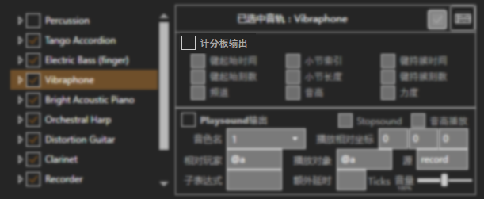
点击启用计分板输出。
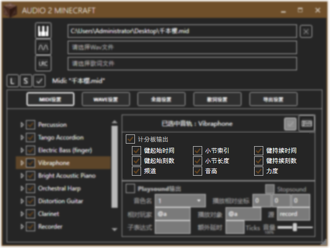
计分板可输出以下属性：
- 键起始时间
键的起始绝对时间 - 键起始刻数
键的起始刻数 - 键持续时间
键的持续绝对时间 - 键持续刻数
键的持续刻数 - 小节索引
键所属于的小节的索引 - 小节长度
键所属于的小节的长度 - 频道
音轨的频道 - 音高
键的音高 - 力度
键的力度
键：代表MidiOut的MidiEvent
Playsound输出
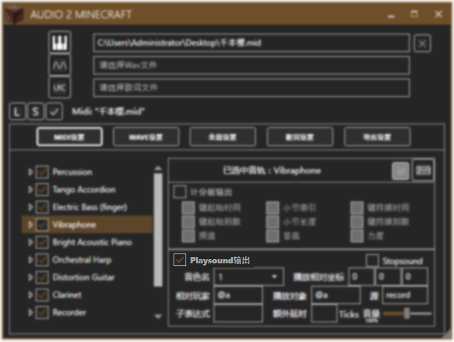
点击启用Playsound输出。
Playsound输出中可设定以下值：
音色名称 & 子表达式
音色名
子表达式
- %t
继承持续时间 - %t[min..max]
继承持续时间，范围限定 - %p
继承音高 - %p[min..max]
继承音高，范围限定 - %pt[CustomPitch.json]
继承自定义持续时间 - %pc[CustomTickName.json]
继承自定义音高 一些资源包的填写方法
两者共同表达的便是Playsound命令中的音效名。
例如
音色名:"12c" + 子表达式:"%p" => 12c.60
资源包中音效的顶级文件夹名，以soma资源包为例，顶级文件夹名就是音色的Id。
例如
Vibraphone - 12/12c, Tango Accordion - 19c, Distortion Guitar - 31/31c
一段表达式，表达式中的某些字符可代表键的属性：
例如
piano.p%pfff
上面的表达式用于RealPiano。如果某键的音高为72，实际得到的字符便是：
piano.p72fff
自定义持续时间和自定义音高是作为匹配列表的json文件，放在config/compare文件夹中，每次启动A2M时可被导入。它的格式很简单，例如octaves.json：
{
"0": "c0",
"1": "cs0",
"2": "d0",
"3": "ds0",
"4": "e0",
"5": "f0",
"6": "fs0",
"7": "g0",
"8": "gs0",
"9": "a0",
"10": "as0",
"11": "b0",
...
}
对于RealPiano
音色名:"lkrb", 子表达式:"piano.p%pfff"
对于SteinwaySoft
音色名:"xwj", 子表达式:"pno.%pf"或"pno.%p.st"
相对玩家 & 相对播放坐标
即execute命令中的对象和相对坐标。
如果启用了双声道，相对坐标将会被覆盖。
播放对象 & 源
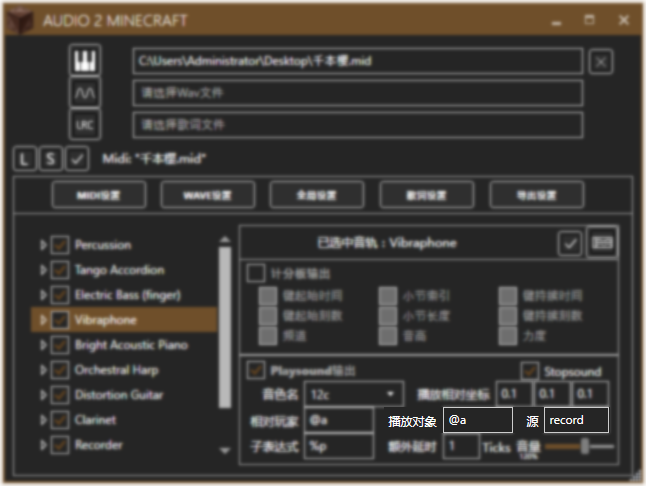
即playsound命令中的播放对象和源。
Stopsound & 额外延时
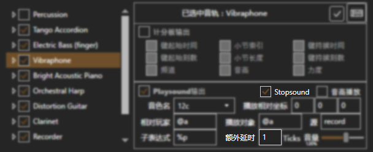
限定播放时间，用于长音。
播放时间 = 键持续刻数 + 额外延时
音量
调整播放音量。
播放音量 = 音轨音量 * 力度 * λ
音高播放
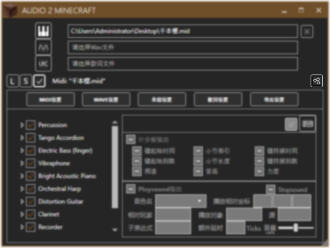
将音高转为playsound中的音高。由于playsound中的音高范围(0.5~2.0)仅对应实际音高的54~78(F♯2~F♯4)，类似NoteBlockStudio，音符将会被自动升降音调以适应此范围。
在资源包中，如果音高可利用子表达式表示，则无需选中此选项。
保存设置
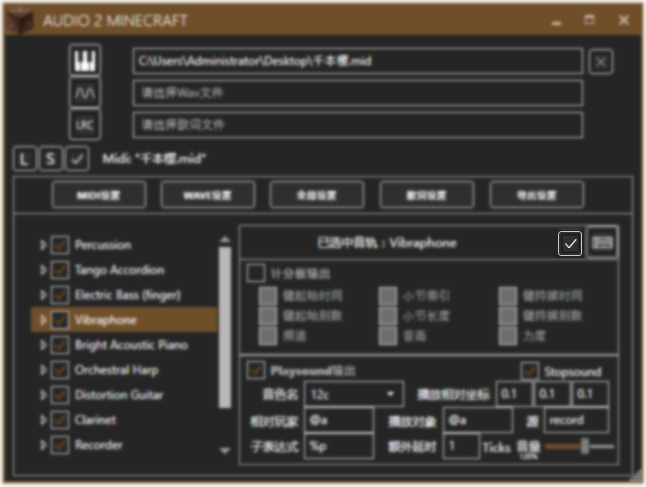
每次修改属性后，别忘了保存。
自动补全
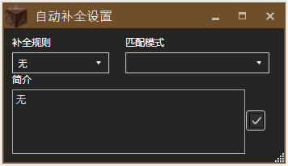
Playsound设置中，对相同的乐器，每次都需要填写相同的内容是件相当麻烦的事情。不过没关系，A2M内置了自动补全。

打开自动补全设置后，选择补全规则和匹配模式

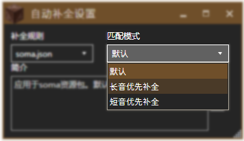
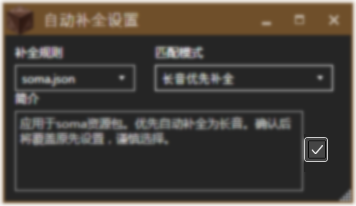
点击对勾确认即可。
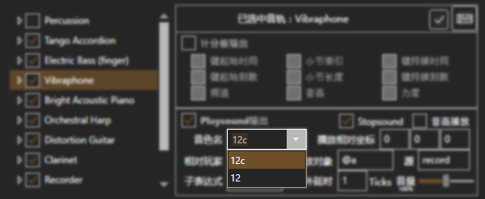
开启了自动补全后，音色名的下拉框中有许多选项，选择后将按照对应的规则自动补全相关设置。（这会覆盖原先的设置，请慎重选择。）
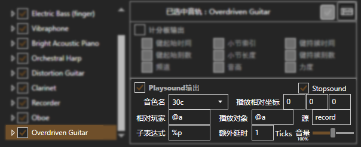
如果选择了一键自动补全，所有乐器的Playsound设置都将被自动补全。（这也会覆盖原先的设置，请谨慎选择。）
自动补全配置文件
自动补全配置文件中规定了自动补全的规则、模式。你可以参照内置的soma.json的格式，制作配合你的资源包的配置文件，把它放在config/autofill文件夹中即可。